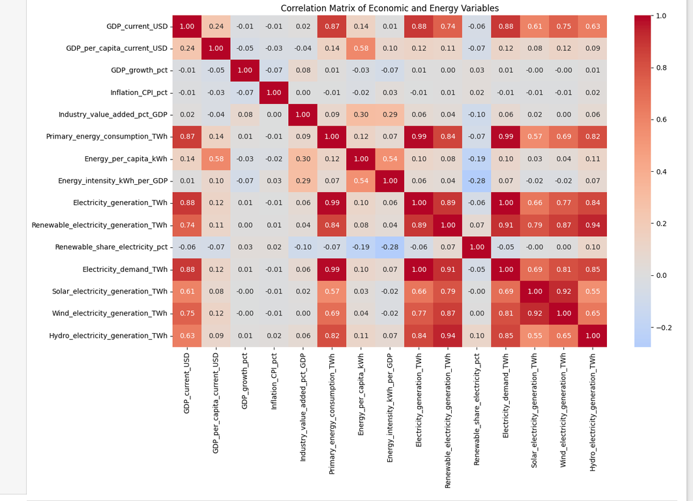
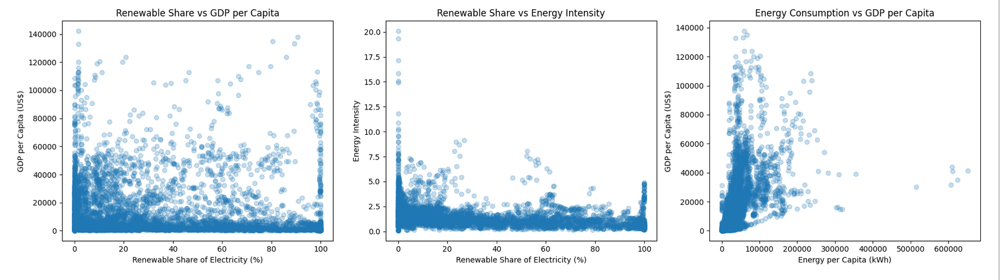
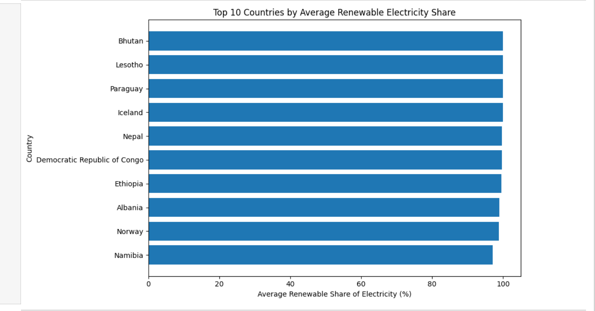
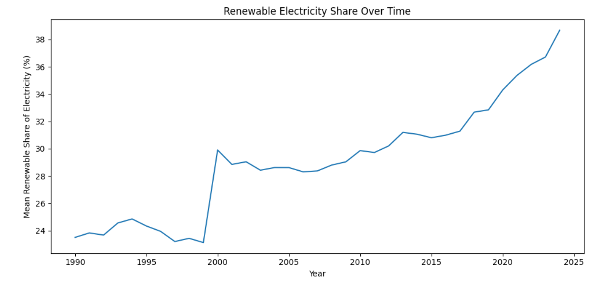
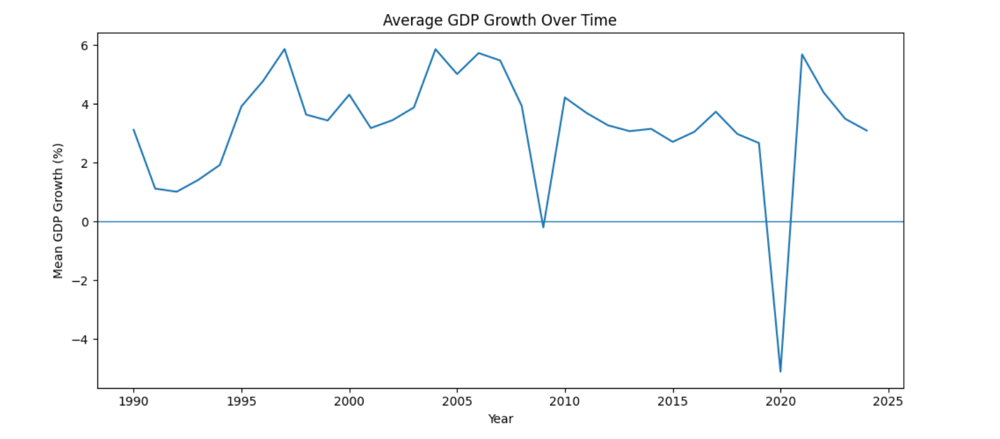
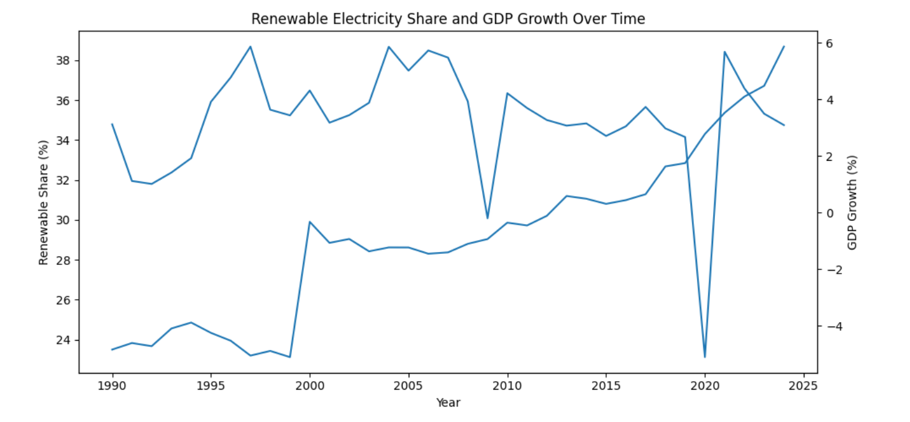
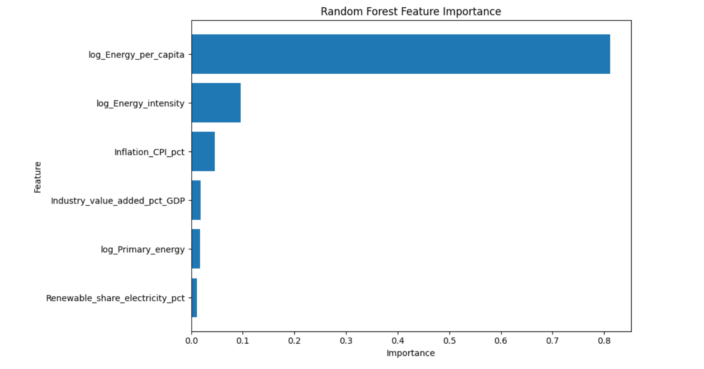
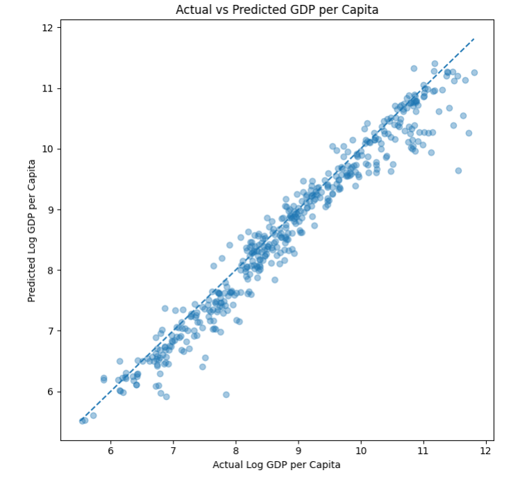

Correlation Matrix of Economic and Energy Variables
The correlation matrix shows that primary energy consumption, electricity generation, and electricity demand are very highly correlated with each other and with GDP in levels (r ≥ 0.87), reflecting the shared influence of country size rather than a renewable-specific effect. By contrast, the renewable share of electricity is only weakly correlated with GDP (r = -0.06), GDP per capita (r = -0.07), and energy intensity (r = -0.28). Energy per capita is most strongly associated with GDP per capita among the candidate predictors (r = 0.58).

Relationships Between Variables
These scatter plots show relationships between renewable electricity share, income levels, and energy use across countries from 1990 to 2024. Renewable share has a weak negative correlation with GDP per capita (r = -0.07) and a stronger negative correlation with energy intensity (r = -0.28).
In contrast, energy consumption per capita has a positive correlation with GDP per capita (r = 0.58). This suggests that countries with higher energy use per person tend to have higher income levels.
Key finding: GDP per capita varies widely at similar renewable shares. Renewable adoption alone does not explain differences in income, and these correlations do not establish causation.

Top 10 Countries by Average Renewable Electricity Share
Bhutan, Lesotho, Paraguay, Iceland, and Nepal are among the countries with the highest average renewable electricity shares in our 1990–2024 dataset. The top-ranked countries have averages close to 100%.
these results largely reflect electricity systems historically dominated by hydropower, alongside differences in natural resources and national energy systems
Key finding: A high renewable electricity share does not necessarily indicate higher GDP. These rankings describe the electricity mix, not overall economic performance.

Renewable Electricity Share Over Time
Global renewable share grew steadily after a long flat period. The unweighted country-average share of electricity generated from renewable sources increased from approximately 23.5% in 1990 to 38.7% in 2024, indicating a substantial long-term shift towards renewable electricity.
The trend shows fluctuations during the 1990s, relative stability through much of the 2000s and 2010s, and a stronger upward movement in the later years, particularly after 2019.
Key finding: Renewable electricity adoption increased over the study period. However, this is an unweighted average across countries and entities, not a share weighted by each country's electricity production. Differences in data coverage may also affect the observed trend.

Average GDP Growth Over Time
Unlike the gradual rise in renewable electricity share, average GDP growth fluctuates considerably across the 1990–2024 study period. Growth remains mostly positive during much of the period, with a noticeable downturn around the 2008–2009 global financial crisis.
The sharpest decline occurs in 2020, when average GDP growth falls to approximately -5%, followed by a strong rebound in 2021. These movements highlight the sensitivity of economic growth to major global disruptions.
Key finding: GDP growth is volatile and cyclical, unlike the longer-term upward trend in renewable electricity share.

Renewable Share and GDP Growth Over Time
Renewable adoption steadily climbs regardless of GDP volatility.
GDP shocks do not alter the continuous upward path of renewable share.
The unweighted country-average renewable electricity share increases
from approximately 23.5% in 1990 to 38.7% in 2024, while average GDP
growth fluctuates considerably throughout the same period.
GDP growth experiences sharp downturns, particularly in 2020, when it falls to approximately -5%, followed by a strong rebound in 2021. In contrast, renewable electricity share follows a broader upward trend over time.
Key finding: Renewable electricity adoption and short-term economic growth display different patterns. Their trends do not move in lockstep, but this graph alone cannot establish causation or rule out other relationships.

Random Forest Feature Importance
The Random Forest regression model identifies energy consumption per capita as the most important predictor of log GDP per capita, accounting for approximately 81% of total feature importance.
Energy intensity contributes about 10%, followed by inflation at around 5%. Industrial value added, primary energy consumption, and renewable electricity share have considerably smaller individual contributions.
Key finding: Energy use per person dominates the model's predictions of income levels, while renewable electricity share contributes relatively little on its own.

Actual vs Predicted GDP per Capita
The machine learning model demonstrates high predictive accuracy. Data points cluster tightly along the diagonal reference line.
This scatter plot evaluates the Random Forest regression model by comparing actual log GDP per capita with the values predicted by the model. The dashed diagonal line represents perfect predictions.
Most data points lie close to this reference line, indicating that the model captures much of the variation in GDP per capita. Some deviations are visible, particularly among observations with higher income levels.
Model performance: On the test dataset, the Random Forest model achieved an R² score of approximately 0.937, with a mean absolute error (MAE) of 0.259 and a root mean squared error (RMSE) of 0.360 on the log-transformed target.
Key finding: The close alignment between actual and predicted values indicates strong predictive performance. However, prediction accuracy does not establish causal relationships between energy use and economic development.
Anomalies, observations and patterns
Anomalies:
- Sudden change in renewable electricity share: The unweighted country-average renewable electricity share rises sharply from approximately 23% in 1999 to around 30% in 2000. This change stands out from the fluctuations in the surrounding years. The available analysis does not establish its exact cause; differences in country composition or data coverage may influence the observed average.
- Sharp decline in GDP growth: Average GDP growth falls to approximately -5% in 2020 before rebounding strongly in 2021. This decline coincides with the economic disruption associated with the COVID-19 pandemic. In contrast, renewable electricity share follows a broader upward trend over the study period.
Observations:
- Differences between countries: Bhutan, Lesotho, Paraguay, Iceland, and Nepal are among the countries with the highest average renewable electricity shares in the 1990–2024 dataset. Their electricity systems have historically relied heavily on hydropower, illustrating the importance of natural resources and existing energy systems in understanding renewable adoption.
- Relationship between energy use and income: Energy consumption per capita has a positive correlation with GDP per capita (Pearson's r ≈ 0.58), while renewable electricity share has a weak negative correlation with GDP per capita (r ≈ -0.07). This indicates that energy use per person has a clearer linear association with income levels than renewable electricity share alone.
Patterns:
- Long-term growth in renewable electricity: The unweighted country-average renewable electricity share increases from approximately 23.5% in 1990 to 38.7% in 2024. Although the trend includes periods of stability and fluctuation, its overall direction is upward. Average GDP growth, in comparison, displays greater short-term volatility.
- Energy consumption dominates model predictions: In the Random Forest model predicting log GDP per capita, log energy consumption per capita accounts for approximately 81% of total feature importance. Log energy intensity is the second most important feature, while renewable electricity share contributes a much smaller proportion. This highlights the predictive importance of energy-use characteristics in the fitted model, without implying a causal relationship.
Limitations of the Study:
- Observational data: The analysis identifies associations between renewable electricity adoption, energy consumption, and economic indicators. However, observational country-year data cannot establish that renewable energy adoption directly causes economic growth or higher income. Other influences, including technology, national policies, natural resources, and economic structure, may also affect these relationships.
- Missing data and uneven coverage: Data availability differs across countries, years, and energy technologies. Consequently, some analyses use fewer observations than the original dataset. The results may therefore reflect the countries and years for which the required indicators are available, rather than providing equally complete coverage of every country throughout the entire study period.
- Differences between data sources: The project combines energy indicators from Our World in Data with economic indicators from the World Bank. Although observations are aligned using country identifiers and year, the original sources may differ in definitions, reporting coverage, and availability. These differences must be considered when interpreting cross-country comparisons.
- Country size and aggregation: Absolute GDP and total energy consumption are strongly influenced by population and country size. Country averages can also hide substantial differences between regions, industries, and communities within the same country. Therefore, aggregate relationships may not describe the circumstances of every individual country or population group.
- Limitations of predictive modelling: Random Forest feature importance indicates the relative predictive contribution of the selected variables; it does not measure their causal effects. Similarly, strong test-set performance does not guarantee identical accuracy for other datasets, countries, or periods. The model predicts log GDP per capita rather than directly explaining the causes of economic growth.
Conclusion:
This project examines the relationship between renewable energy adoption, energy consumption, and economic development across countries from 1990 to 2024. By combining energy indicators from Our World in Data with economic indicators from the World Bank, the study develops a country-year dataset containing 7,606 observations across 220 countries and entities. Data cleaning, missing-value checks, exploratory visualisation, correlation analysis, and predictive modelling provide different perspectives on the relationship between energy systems and economic conditions.
The descriptive analysis reveals a long-term increase in the unweighted country-average renewable electricity share, from approximately 23.5% in 1990 to 38.7% in 2024. In contrast, average GDP growth fluctuates considerably, with a particularly sharp decline in 2020. The scatter plots and correlation analysis also show that renewable electricity share alone has only a weak linear relationship with GDP per capita, while energy consumption per capita has a clearer positive association with income levels.
The Random Forest regression results reinforce this observation: energy consumption per capita is the dominant predictor of log GDP per capita among the selected features, whereas renewable electricity share contributes relatively little to the model's predictions. This does not imply that renewable energy is economically unimportant; rather, it indicates that renewable share alone does not capture the many factors associated with differences in income across countries.
Overall, the findings highlight the importance of examining renewable energy adoption alongside energy-use characteristics, income levels, and national economic structures. The project demonstrates how public datasets and data-science techniques can reveal meaningful patterns in the global energy transition while recognising the limitations of missing data, cross-country differences, and observational analysis. Further research incorporating country-specific characteristics, additional explanatory variables, and alternative modelling approaches could provide a deeper understanding of these relationships.